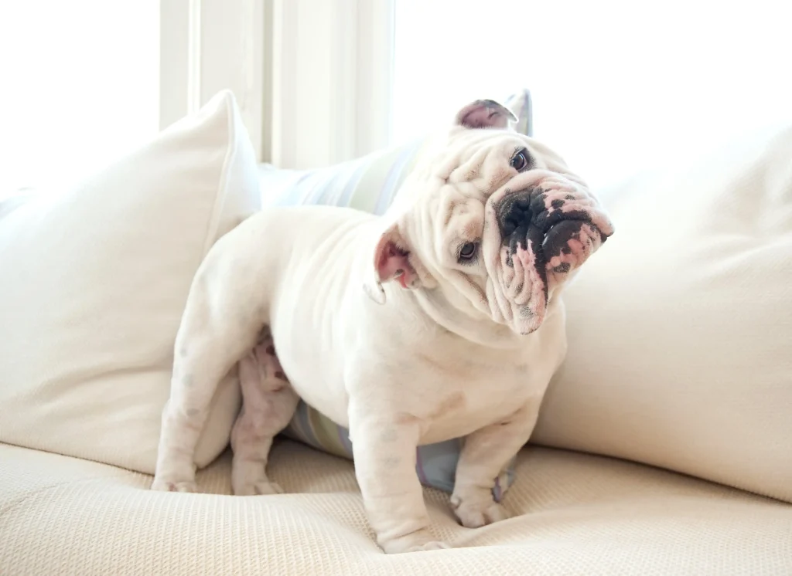

TODO: Transforme o texto "Voltar" abaixo em hiperlink que leva o usuário para a página com o sumário de todos os cachorros
Voltar
Outro cão que faz parte das raças braquicefálicas é o Buldogue. Apesar da cara de cachorro bravo, ele é dócil, carinhoso e excelente companhia para tutores e tutoras que preferem animais menos agitados.